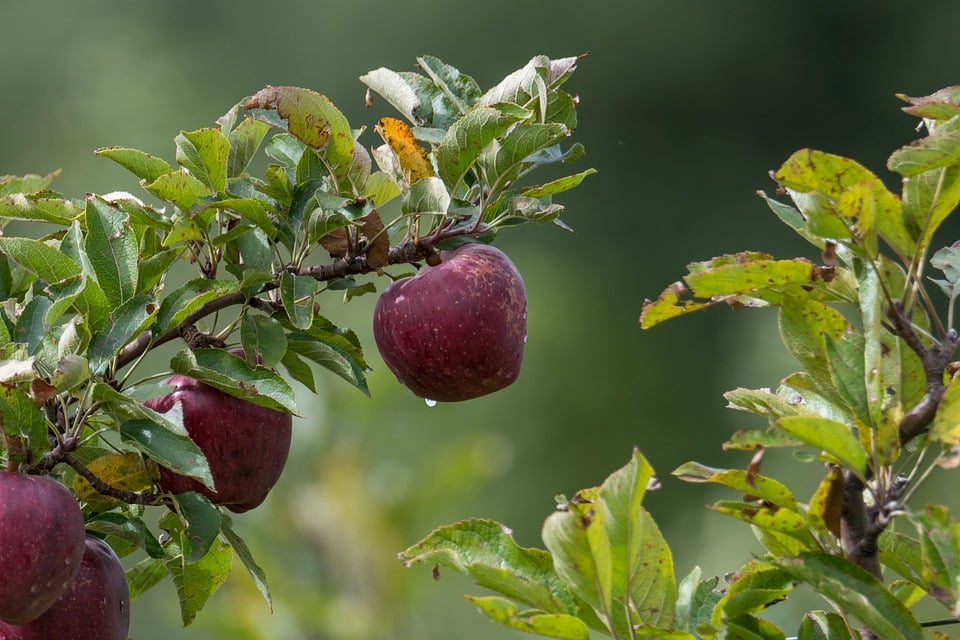
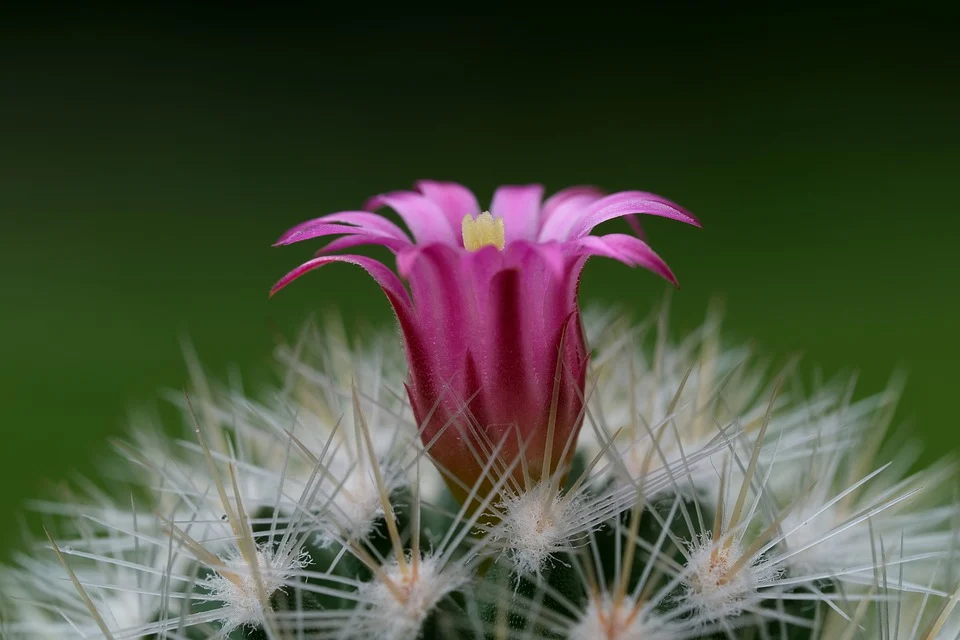
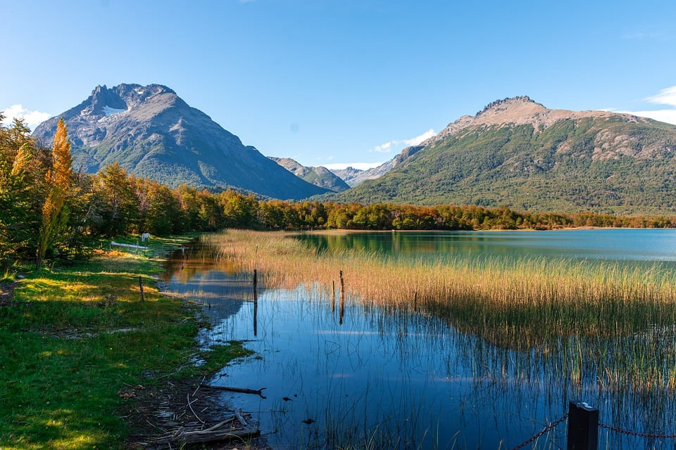
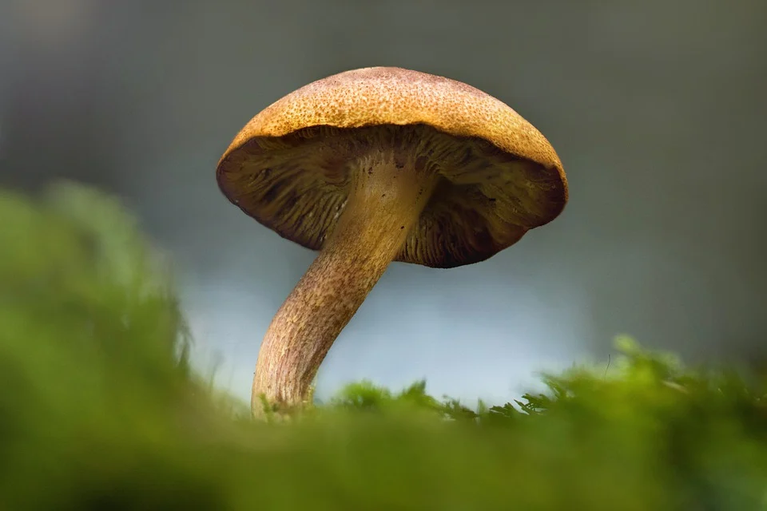
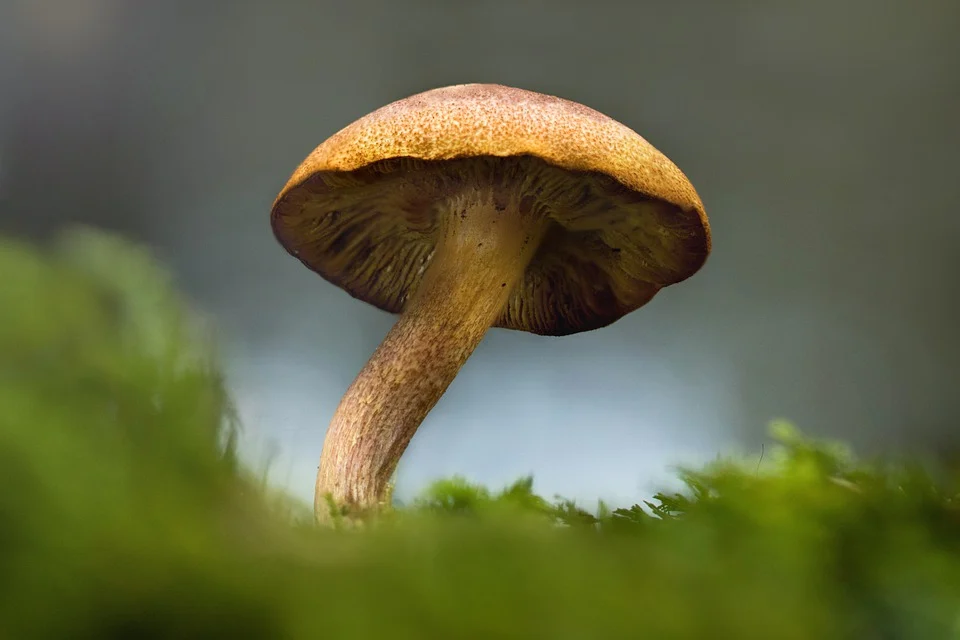
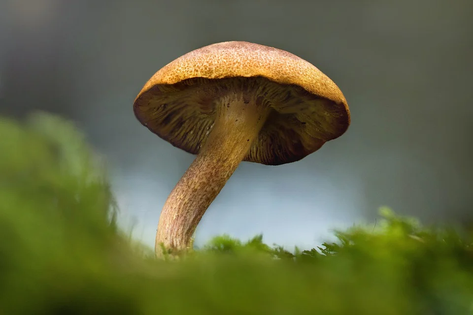

Galeria de Fotos
   


A natureza é um dos mais belos e complexos sistemas que existem no nosso planeta. Ela é composta por uma variedade infinita de seres vivos, plantas, animais e micro-organismos, que coexistem e interagem uns com os outros em perfeita harmonia.
natureza é uma fonte de vida e inspiração para os seres humanos. Desde os tempos antigos, a natureza tem sido reverenciada como uma entidade divina, capaz de trazer a paz e a cura para os indivíduos. De fato, a natureza tem o poder de nos curar e nos restaurar, tanto mental quanto fisicamente.
natureza é também um grande provedor de recursos para a nossa sobrevivência. Ela nos fornece alimentos, água, ar limpo e muitos outros recursos que são essenciais para a nossa vida. Além disso, a natureza é também uma fonte inesgotável de beleza e de maravilhas naturais, como montanhas, rios, florestas e oceanos.
No entanto, a natureza está enfrentando muitos desafios atualmente. A mudança climática, a poluição, a degradação do solo e a perda de biodiversidade são apenas alguns dos problemas que estão afetando a natureza. Estes problemas não só afetam a natureza em si, mas também têm um impacto direto na nossa saúde e bem-estar.
Por isso, é importante que todos nós façamos a nossa parte para proteger e preservar a natureza. Isso pode ser feito de diversas maneiras, como a reciclagem, a redução do uso de plásticos e outros materiais poluentes, o uso de energias renováveis e a redução do nosso consumo de recursos naturais. Além disso, devemos valorizar e respeitar a natureza em todas as suas formas e contribuir para a sua preservação para as gerações futuras.
